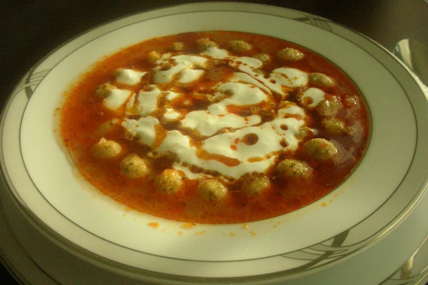
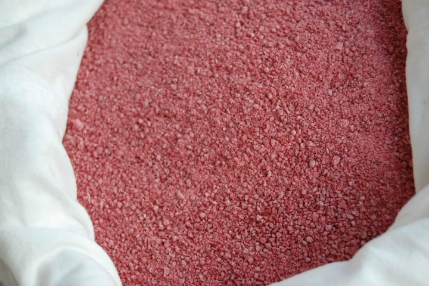
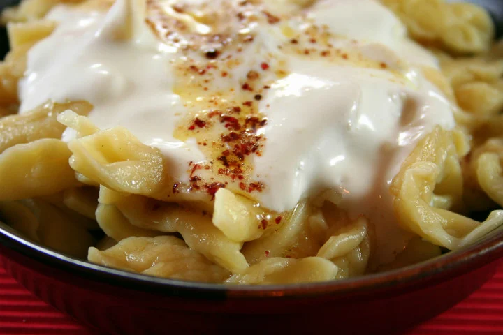

Yenilecek Yemekler
Kütahya, herkesin de bildiği gibi porselen ve çinileri ile meşhur bir şehir. Ancak şehrimin güzellikleri sadece bununla sınırlı değil. Yemekleri de en az çinileri kadar güzel. Hadi biraz yemeklerine bakalım:)
OLMAZSA OLMAZ:KIZILCIK TARHANASI
Evet, ülkemizin dört bir yanında çeşit çeşit tarhana çorbası var, bunu biliyoruz zaten. Ama Kütahya'nın bu kızılcık tarhanasını görünce, tam anlamıyla vurulduk rengine. Üstelik kızılcıktan aldığı sadece rengi değil çeşit çeşit faydaları da var bu kırmızı güzelin. Özellikle kış aylarında hastalıklara karşı adeta bir kalkan olup koruyor vücudu hastalığa kapılmaktan. Nasıl düşünceli bir bilseniz...
SIKICIK ÇORBASI
Bir çorba düşünün, içinde ince bulgur var, tarhana var, un, et suyu, salça ve yoğurt var... Kısacası, yok yok onda. E doğal olarak, koca bir tabak ana yemek gücünde bir kasesiyle. Doyma garantili bu lezzeti en hasından tatmak için bile gidilir Kütahya'ya bizce.
CİMCİK MANTISI

Kütahya'ya özgü hamur işlerinin en ünlülerinden cimcik, bir tür mantı aslında. Un, yumurta, su ve tuzdan oluşan küçük malzeme kadrosuyla hazırlanan, sonunda dev bir lezzete dönüşen hamurun tereyağı ve sarımsaklı yoğurt ile buluşmasıyla oluşur. Dileyenler üstüne salça da koyar. Her haliyle enfes olur.
HAŞHAŞLI GÖZLEME
Yine az ama öz malzemesiyle damaklarda şenlik yaratan bir Kütahya lezzetiyle karşınızdayız. Bugüne dek damağınızda tadı kalan o en güzel gözlemeyi düşünün, işte bu haşhaşlı gözleme onu bile unutturacak güzellikte. İçinde sadece un, tuz, haşhaş ve yağ bulunuyor temel olarak. Son dokunulu sacdan geliyor. Mis kokusuyla sofralara çıkıyor.
ILIBIDA DOLMASI
Yörede ilibada ya da ılıbada olarak anılan labadanın bulgur, kese yoğurdu, soğan, nane ve kırmızı biberden oluşan karışım ile doldurulmasıyla oluşuyor ilibada dolması. Karabiber de eksik olmuyor iç harcından. Üzerine de yoğurt gezdirilince tadından yenmiyor. Bu nefis dolma, kalkıp Kütahya'ya gitmek için başka bir sebep daha vermiş oluyor.
ŞİBİTLİ TAVUK TİRİDİ
ILIBIDA DOLMASI
Yörede ilibada ya da ılıbada olarak anılan labadanın bulgur, kese yoğurdu, soğan, nane ve kırmızı biberden oluşan karışım ile doldurulmasıyla oluşuyor ilibada dolması. Karabiber de eksik olmuyor iç harcından. Üzerine de yoğurt gezdirilince tadından yenmiyor. Bu nefis dolma, kalkıp Kütahya'ya gitmek için başka bir sebep daha vermiş oluyor.